Manajemen IoT Dashboard System
Topik Bahasan
Manajemen IoT Dashboard System
Kemampuan Akhir yang Direncanakan
- Mahasiswa mampu mengkonfigurasi rule user pada IoT Platform
- Mahasiswa mampu mengkonfigurasi smart device
- Mahasiswa mampu mengimplementasikan program di sisi smart device merujuk pada library IoT Server yang digunakan
- Mahasiswa mampu untuk mengkomunikasikan antara smart device dan IoT Server
- Mahasiswa mampu untuk menampilkan data sensor ke IoT Dashboard System sebagai monitoring
Teori Singkat
Layaknya sebuah IoT platform yang mempermudah pengguna dalam memvisualisaikan atau menyajikan data kepada pengguna, Node-RED juga menyediakan sebuah dashboard agar kita dapat dengan mudah untuk menyajikan data secara live atau real time.
Untuk menggunakan atau membuat tampilan dashhboard menggunakan Node-RED juga sangat mudah, yaitu tinggal melakukan drag and drop pada worksheet untuk setiap komponen.

https://flows.nodered.org/node/node-red-dashboard
Praktikum
1. Install Dashboard Node-RED
Untuk menggunakan dashboard Node-RED, kita harus install terlebih dahulu modulnya terlebih dahulu. Dapat dilakukan menggunakan 2 cara untuk installasinya, sebagai berikut
Menggunakan perintah
npm.Langkah-langkah yang dapat dilakukan adalah sebagai berikut
- Masuk ke direktori installasi Node-RED, ketika menggunakan EC2 terdapat di
/home/ubuntu/.node-red. Jalankan perintahcd /home/ubuntu/.node-reddi EC2 Anda. - Selanjutnya jalankan perintah
npm i node-red-dashboard.
- Masuk ke direktori installasi Node-RED, ketika menggunakan EC2 terdapat di
Menggunakan menu
Manage palletepada Node-RED, mengakses Node-RED via browser.Langkah yang dapat dilakukan adalah sebagai berikut
- Silakan akses Node-RED via browser, misalkan
http://ec2-52-91-160-126.compute-1.amazonaws.com:1880/. Sesuaikan alamat atau lokasi Node-RED yang Anda install, misalkan jika menggunakan Oracle Cloud. Klik button yang terdapat di pojok kanan atas dan cari menu
Manage pallete. Perhatikan gambar di bawah ini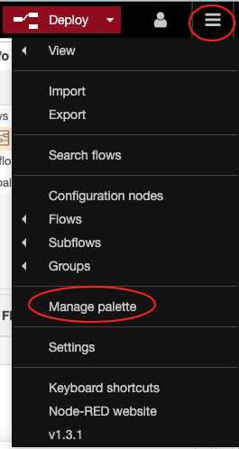
Sehingga akan muncul jendela
User Settings, pilih tabinstalldan ketikdashboardsehingga akan muncul modul-modul yang bisa kita install dan kliktombol install. Untuk lebih jelasnya perhatikan gambar di bawah ini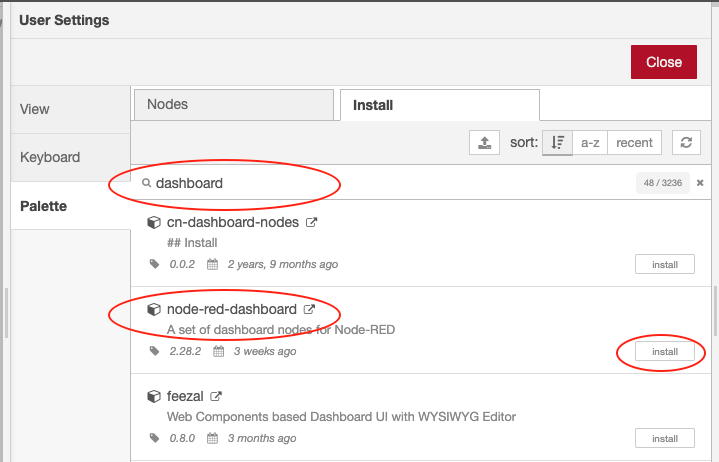
Akan muncul pop notifikasi proses install seperti gambar di bawah ini, silakan pilih atau klik
tombol install.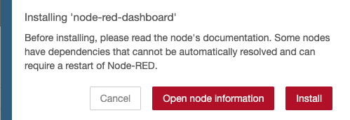
Silakan cek dengan melihat pada Node-RED via browser, seharusnya sudah bertambah komponen-komponen dashboard pada pallete yang terdapat di sebelah kanan. 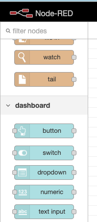
- Silakan akses Node-RED via browser, misalkan
2. Membuat Dashboard Node-RED
Pada praktikum yang kedua akan dibuat sebuah tampilan seolah-olah menyalakan lampu dari internet, ikutilah langkah-langkah sebagai berikut
Terlebih dahulu pilih menu
dashboard, yang terdapat di pojok kanan bawah. dashbaord ini adalah untuk mengkonfigurasi website yang akan kita buat misalkan dari sistem menu/hirarki menu ataupun title website. Perhatikan gambar di bawah ini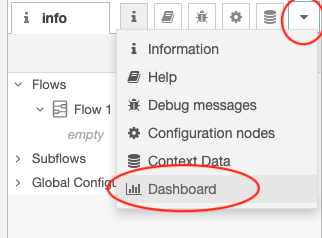
Setelah ditambahkan
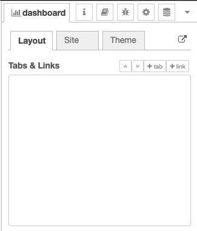
Pada bagian
Tabs & Linksklik tomboltabsehingga akan ditambahkan tab baru di bawahnya, pada tab baru yang terbentuk yaituTab 1klik tomboleditsehingga akan muncul jendelaEdit dashboard tab nodeseperti berikut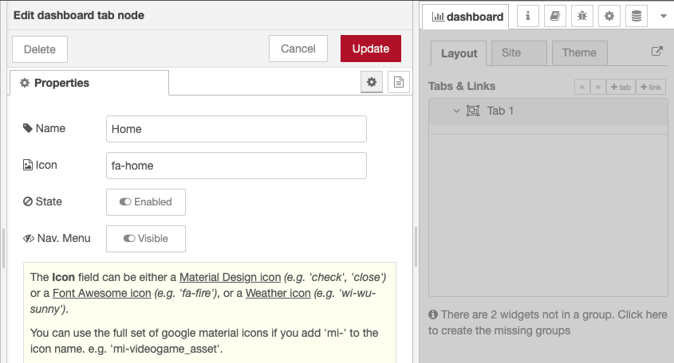
Pada bagian
NameisikanHomedanIcondiganti denganfa-homedan klik tombolUpdateuntuk mengakhiri.Untuk mengganti icon dengan yang lain bisa menggunakan
Material Design Icon, Font Awesome Icon, atau Weather Icon. Contoh di atas menggunakan style dari iconFont Awesome Icon.Selanjutnya tambahkan
GrouppadaTab Hometersebut dengan klik tombolgroup. Selanjutnya klikeditpada group yang baru ditambahkan sehingga akan muncul jendelaEdit dashboard tab nodekembali. Sesuaikan nilai-nilai seperti pada gambar berikut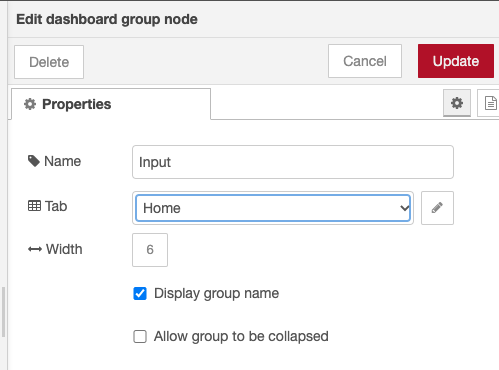
Ulangi langkah sebelumnya sehingga tampilannya menjadi seperti berikut
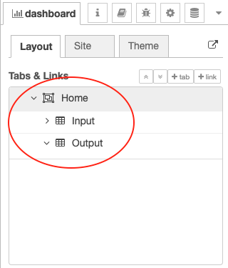
Drag ke worksheet/flow node
switchkemudian double klik sehingga akan menampilkan jendela seperti di bawah, sesuaikan bagian sepertiGroup, Label, dan Nameseperti pada gambar di bawah ini.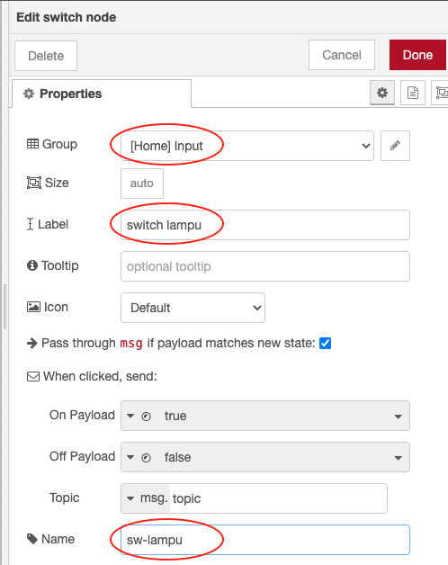
Ulangi langkah sebelumnya, tetapi yang ditambahkan adalah node
text, sesuaikan property seperti pada gambar berikut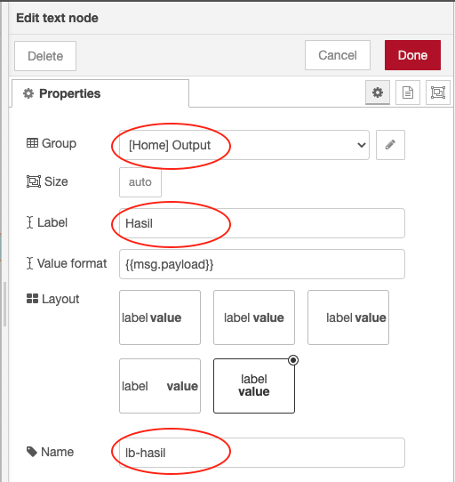
Hubungkan
node switchdannode text, hasil akhirnya adalah sebagai berikut. Kemudian silakan lakukan deploy dengan klik tombolDeploy. Untuk melihat tampilannya silakan akses Node-RED, misalnyahttp://ec2-52-91-160-126.compute-1.amazonaws.com:1880/ui.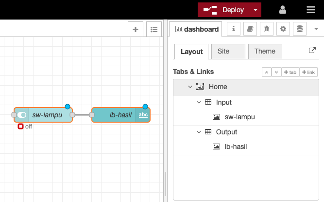
Hasil akhirnya adalah sebagai berikut
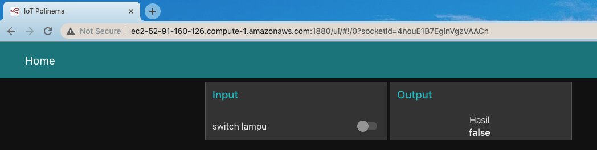
Pertanyaan
Silakan modifikasi flow di atas sehingga ketika node switch digeser tidak menghasilkan nilai true atau false, tetapi ketika digeser nilainya adalah nyala atau mati. Perhatikan gambar berikut ini
Dalam keadaan mati 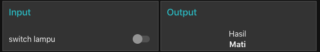
Dalam keadaan hidup 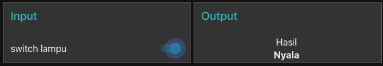
Video Pendukung
Tugas
Buatlah sebuah dashboard website untuk memonitoring dan control pada sebuah ruang lobby, ruang kajur, dan ruang dosen. Masing-masing ruang dengan detail node yang dibutuhkan pada node dashboard sebagai berikut;
- Tab Home memiliki group Lobby, Ruang Kajur, dan Ruang Dosen.
- Group Lobby terdapat 2 node inject, 2 function, gauge, dan chart.
- Group Ruang Kajur terdapat 2 node inject, 2 function, gauge, dan chart.
- Group Ruang Dosen terdapat 2 node inject, 2 function, gauge, dan chart.
Jika diperhatikan node gauge dan chart bisa otomatis berjalan, hal tersebut diaktifkan saja pada bagian otomatis pada node inject.
Sedangkan nilai yang selalu muncul acak itu menggunakan node funcion,
Math.floor(Math.random()*101)Jumlah line antara node chart pada Lobby, Ruang Kajur, dan Ruang Dosen berbeda bisa dilakukan dengan cara mengubah
Setup Outputspada function.
- Tab Room Control terdiri dari group Lampu dan AC.
- Group Lampu memiliki 3 switch, 3 function, dan 3 text.
- Group AC memiliki 3 slider dan 3 text.
function digunakan untuk parsing boolean ke string, "nyala atau mati".
- Tab About hanya terdiri dari text biasa.
Hasilnya adalah sebagai berikut
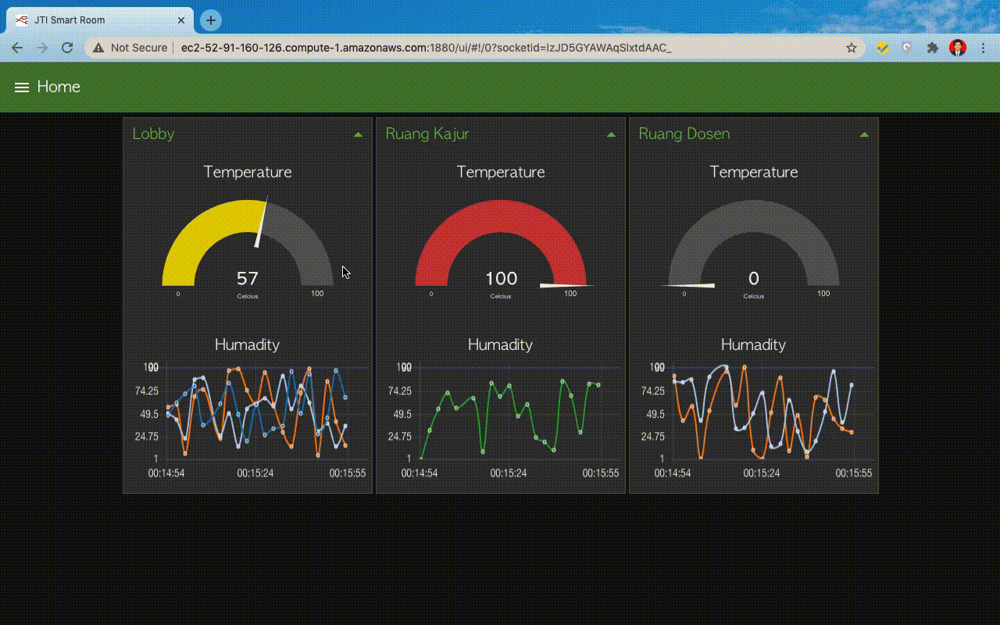